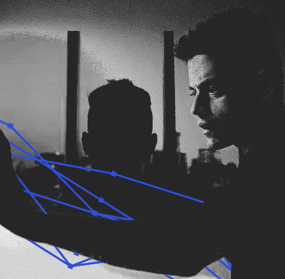

BASICS
ALIASES sam sepiol, sepi0l
GENDER trans man (he/him)
AGE generally written at 28 or older
BIRTHPLACE washington township, new jersey
OCCUPATION blackhat hacker, former cybersecurity
engineer
SEXUAL ORIENTATION bisexual
CURRENT STATUS canon-compliant, generally placed into
post-canon
PHYSICALITY
DISTINGUISHING FEATURES multiple people have commented on
his “bug eyes”, which is probably fair enough. he tries to make
himself invisible and innocuous as much as possible. often seen in a
black hoodie, but not always.
HEIGHT 5'7”
PHYSICAL AILMENTS chronic back pain, temporomandibular
joint dysfunction
PIERCINGS/TATTOOS none
SCARS many. notable ones include old cigarette burns on
his arms, a few long thin ones that are both older, and the scar from
a gunshot set right in the middle of his stomach.
SPEECH/TONE generally soft-spoken and slower, but can
speed up and become more fluid depending on who's fronting and how
upset he is.
BODY TYPE scrawny and small. he doesn’t look healthy and
he never has. he can run more than you expect, though.
HAIR black, shaved on the sides, gets curly if he lets it
grow out, which he practically never does unless in a particularly bad
brain state.
WARDROBE minimalist, mostly neutrals. often seen in a
black hoodie. may wear other jackets, but generally doesn't go for
anything more adventurous than a dark blue. incredibly bad at getting
clothes that fit him properly—things tend to be a little too large, as
if trying to hide himself.
PERSONALITY
STAR SIGN virgo
ALIGNMENT floating somewhere between neutral good to
chaotic neutral, somewhere in that corner
MBTI infp (the mediator)/intp (the logician)
FIVE POSITIVES intelligent, creative, ethical (in his own
way), focused, perceptive
FIVE NEGATIVES anxious, impulsive, isolated, paranoid,
very, very angry
RELIGION raised in an evangelical household. very much not
okay with religion now.
ILLNESSES dissociative identity disorder, c-ptsd,
depression, anxiety
KNOWN LANGUAGES english, some conversational arabic
SKILLS hacking, social engineering, lockpicking. basically
anything in the hacker's toolkit. a genuinely impressive ability to
think up plans of attack. very good at making himself nigh-invisible.
INTERESTS very singularly fixated on hacking. also likes to
draw, eventually gets into miniature painting and kitbashing, would
eventually like a motorcycle if people can convince him to ride one
INTELLIGENCE absurdly smart in many ways. emotionally
oblivious, but mostly in ways that are stunted by severe trauma. may or
may not be good at reading people depending on who you're talking about
(the more confident they are about reading people, the less right they
probably are).
HOST
IN CONTROL (POST-S4)
disappeared for the events of 2015. felt helpless in an uncaring
world after years of trauma; crushed by the forces of capitalism.
probably kinder than you'd expect; still dislikes people and
crowds, but less outright paranoid. in control post-series. coming
to terms with everything that happened.
MASTERMIND
IN CONTROL (S1-S4)
the instigator and main character of mr. robot, and the alter you're most likely to meet if your character met elliot over the events of the series. the mastermind was made to hold elliot's rage and to be an active force in an unbearable world. in control from october 2014 to the end of 2015. brilliant. troubled. relentless.
PROTECTOR
INTERMITTENT
the first alter to exist. mostly bark and less bite than the mastermind, but dangerous in his own right. will protect the system. will hurt other people to protect the system. has the most self-preservation and a paternal instinct towards the other alters and the people they care about. honestly kind of an asshole.
PERSECUTOR
UNAVAILABLE
modeled after elliot's mother. holds most of the negative and abusive messages that were imparted to him throughout his childhood. her function is to, in short, teach them how to "behave" in order to avoid upsetting the abuser (i.e. elliot's mother, in this case) in the future. will not be written on this blog.
LITTLE
UNAVAILABLE
created to partition off much of the abuse elliot suffered. protected very deeply by the rest of the system and very rarely if ever fronts. will not be written on this blog. please don't ask.